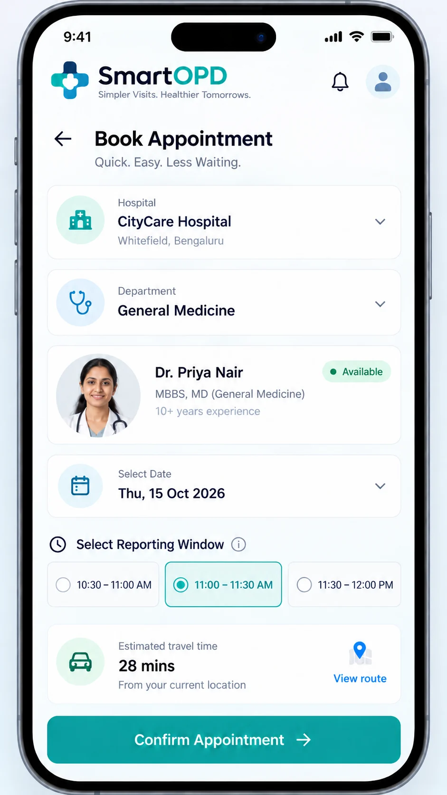
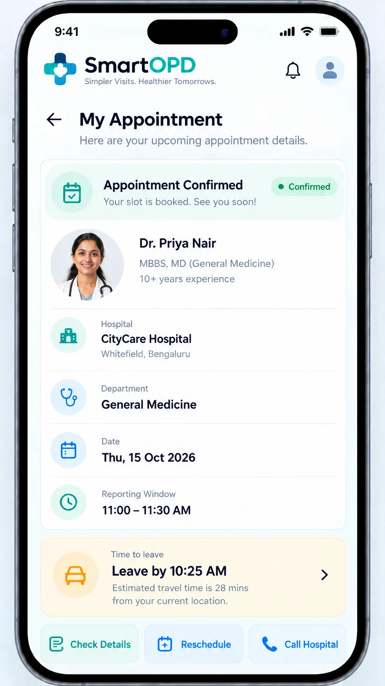
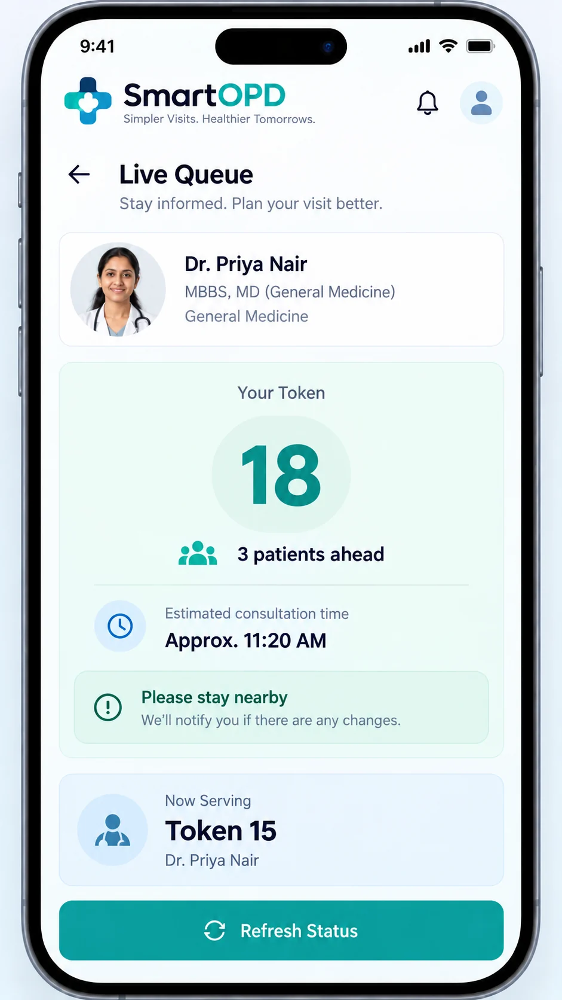

◷
For patients
Long queues, uncertain consultation times and unnecessary hours spent sitting in waiting areas.
More predictable visits →Meet SmartOPD — a smarter way to plan outpatient visits, coordinate appointments and walk-ins, and spend less time waiting at the hospital.
Working standalone prototype
Seeking our first hospital pilot partner


THE PROBLEM WORTH SOLVING
Patients need clarity. Hospital teams need coordination. SmartOPD is designed to improve both sides of the OPD experience.
Long queues, uncertain consultation times and unnecessary hours spent sitting in waiting areas.
More predictable visits →Advance appointments and same-day walk-ins need to be coordinated fairly across doctors and departments.
One clear workflow →Reception load, changing consultation pace and unclear patient status make it harder to run a smooth OPD.
Better operational visibility →SIMPLE BY DESIGN
SmartOPD coordinates online appointments and receptionist-entered walk-ins without asking every patient to follow the same digital path.
See the mobile previewPatients book a reporting window in advance, or reception helps a walk-in find a suitable return window.
Reminders and relevant delay updates help patients plan their trip instead of waiting at the hospital all day.
The queue token is assigned only after arrival and check-in, bringing online and walk-in patients into one live queue.
Patients can view the token status and an evolving wait estimate; staff coordinate calls and exceptions.
BUILT FOR REAL OPD ROUTINES
A practical patient-flow experience, with important decisions remaining in the hands of hospital teams and clinicians.
Make arrival time useful, not merely the time of an online reservation.
Coordinate bookings and same-day visitors within available OPD capacity.
Show where the queue stands after the patient checks in.
Keep patients informed when consultation estimates or schedules change.
Support return visits based on a clinician-authorized date or range.
Begin with a standalone, supervised pilot. Existing-system integrations are a future goal.
A FIRST LOOK AT SMARTOPD
Designed with a mobile-first patient experience in mind. No complex dashboard to learn just to know when to arrive.

These are illustrative interface visualizations based on the SmartOPD product plan, not captures of the running prototype. Details shown are fictional sample data.
WORKING PROTOTYPE · FIRST PILOT NEXT
Our standalone prototype is complete. We are looking for our first partner hospital to test SmartOPD in one or two OPD departments, with staff-led supervision and measured outcomes.
This opens WhatsApp with a draft message; nothing is sent automatically.
Map the hospital's existing OPD flow, train staff and record baseline waiting times.
Start with one or two OPD departments and coordinate appointments with existing hospital processes.
Compare physical waiting time before and during the pilot, then plan expansion.
A FEW IMPORTANT DETAILS
Honest answers about SmartOPD's current stage and how hospitals can get involved.
Not yet for live public hospital appointments. SmartOPD has a working standalone prototype and is seeking its first hospital pilot partner.
Yes. The planned flow lets reception register same-day walk-ins and offer suitable reporting or return windows. Tokens are issued after physical check-in.
Not yet. The prototype works standalone. Any hospital-system integration would be scoped and validated with the partner hospital later.
No separate SmartOPD platform fee is intended for patients. SmartOPD follows a hospital-funded, flexible institutional pricing model; normal hospital charges remain separate.
Interested in piloting a smarter OPD experience at your hospital?
Let's talk about a pilot